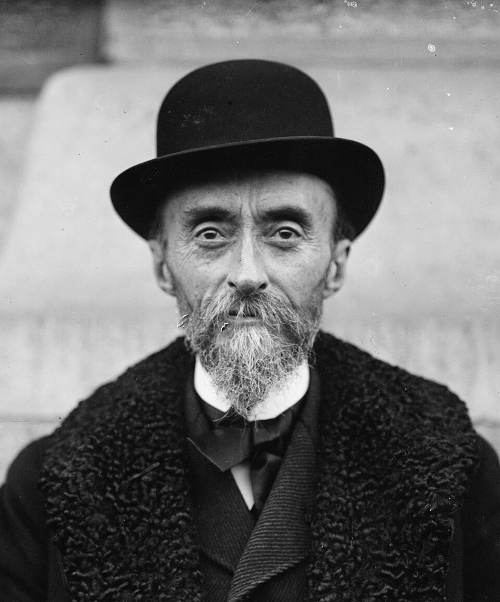

Pintor francés
Fernand Cormon
1845–1924
Fernand-Anne Piestre, llamado Cormon, nació y murió en París (1845–1924) 12. Pintor de historia y de temas religiosos de factura académica y muralista 1, hizo carrera oficial bajo la Tercera República: medallas en el Salón desde 1870 y encargos públicos 2. Su Caín (1880, Musée d'Orsay), de 4 × 7 metros e inspirado en «La Conciencia» de Victor Hugo, lo compró el Estado, le valió la Legión de Honor e inauguró su especialidad prehistórica, pintada con modelos vivos vestidos de pieles 2. Por su atelier libre pasaron Émile Bernard (1884–1886), Toulouse-Lautrec y, de marzo a junio de 1886, Van Gogh 34. Aquellos alumnos desafiaban sus principios académicos; tras un enfrentamiento en abril de 1886, Cormon cerró temporalmente el taller 4.